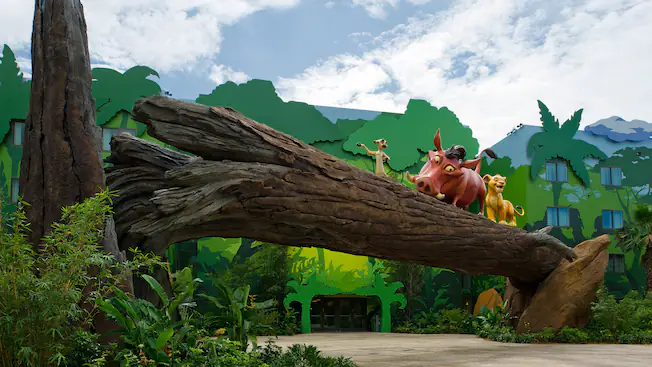
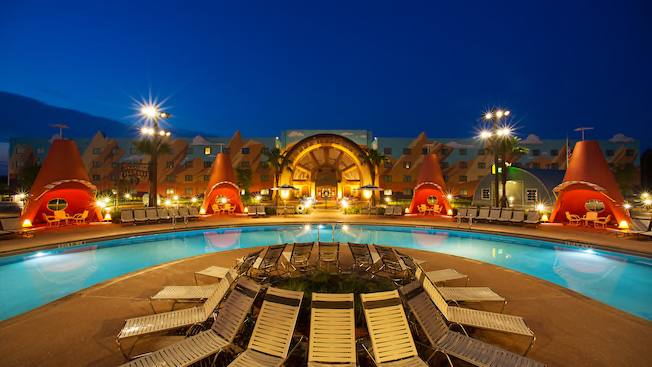
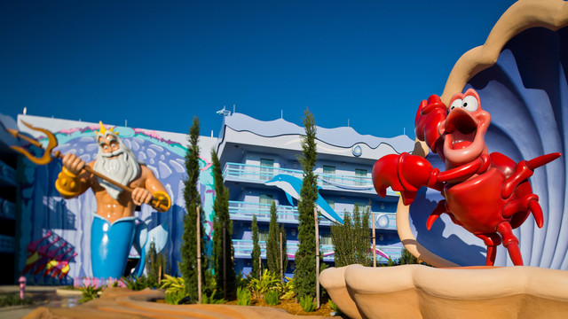
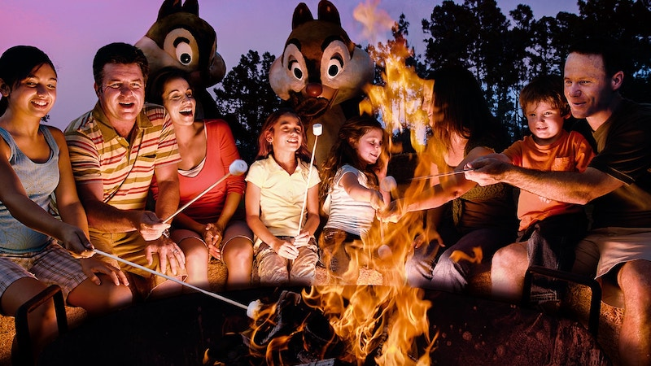
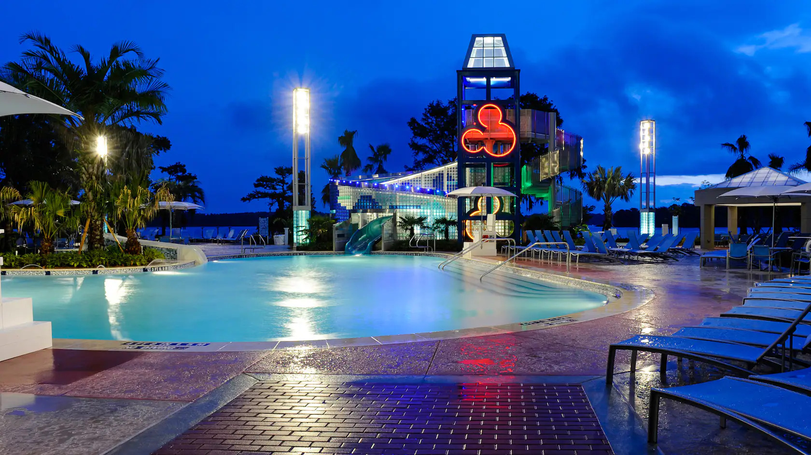
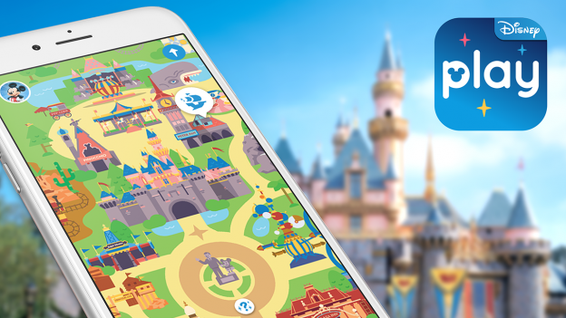
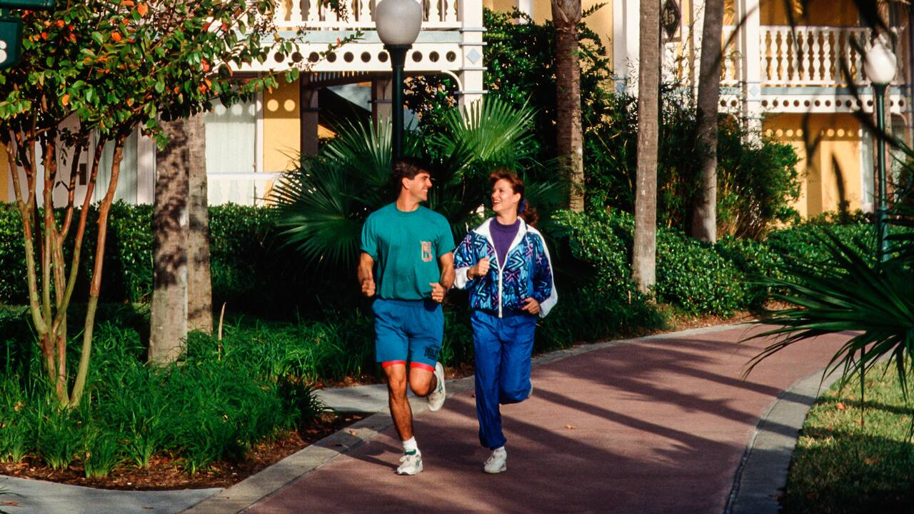
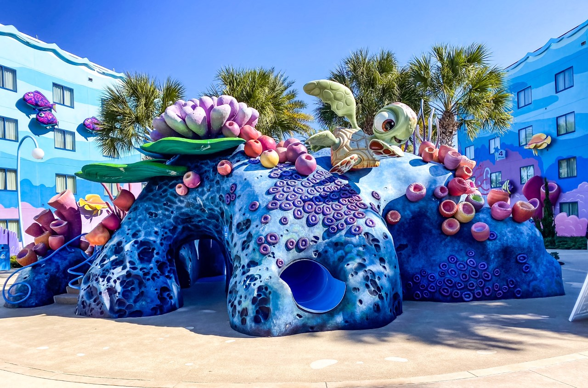
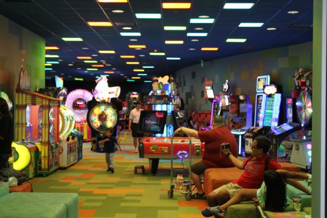
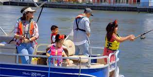

Recreação
Nos Resors do Walt Disney World, existem atrações para todas as idades e público, para entreter tantos os mais velhos, quanto também os mais novos, e no Art of Animation Resort não é diferente, veja algumas das recreações a seguir!
Recreações Existentes no Resort
Piscinas no Disney's Art of Animation Resort
The Big Blue Pool

Sendo a maior piscina em um hotel do Walt Disney World Resort, The Big Blue Pool localizada no próprio Art of Animation Resort, tem a temática do grande sucesso Procurando Nemo e com profundidade zero, contém mais de 308.527 galões de água!
Cozy Cone Pool
Se delite nas cabanas em forma de cone em volta da piscina do Cozy Cone Motel, com a temática do incrível filme de carros falantes, Carros, e é um local ideal para todas as idades, trazendo toda a atmosfera aconchegante da cidade de Radiator Springs.
Flippin' Fins Pool
Pule nesse oceano de 103.642 galões de água, e vivencie a piscina Flippin' Fins Pool, com uma temática incrível do filme A Pequena Sereia, que além de ser um habiente aquático maravilhoso, também conta com peças baseadas nos personagens do filme, e também a famosa Uder the Sea Orchestra, regida pelo Sebastian, personagem do filme.
Atividades ao lado da fogueira no Art of Animation
Após o pôr do sol, se junte com a familía e de moda antiga, cerque uma fogueira enquanto assa marshmallows
Localizado perto do Pride Rock, das 18h30 às 19h30 todos os dias.
Filme sob as Estrelas
Deguste o momento de assistir seus filmes preferidos da Disney ao ar livre, com o céu estrelado.
Localizado na Big Blue Pool, às 20h30 todas as noites.
Novas diversões com o aplicativo Play Disney
Se diveirta e vivencie as histórias clássicas da Disney na palma da sua mão no Disney's Art of Animation Resort!
Trilhas para corrida
Corra ou caminhe por uma trilha temática e encantadora de 1,38 milhas de extensão pelo Disney's Art of Animation.
Playground
As crianças também possuem seu espaço para se divertirem sem ver o tempo passar, no playground Righteous Reef, localizado no Finding Nemo Courtyard.
Pixel Play Arcade
Aqui a velha e nova guarda se juntam para se divertir com os videogames clássicos ou atuais, neste salão de jogos de fliperama, localizado no Animation Hall.
Pesca Esportiva
No Hourglass Lake, é proíbido a pesca, porém você vai se divertir abessa com a pesca esportiva nas marinas próximas!